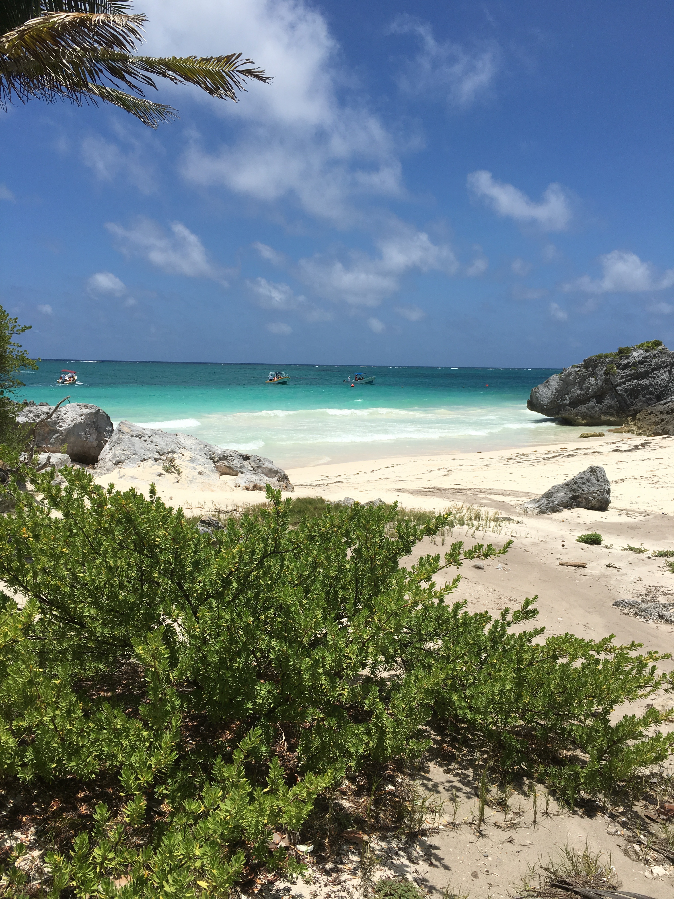

I have visited Mexico three times, and each time I have seen a different part of the country. Below are the major areas of Mexico that I have been to.
Mexico!
Puerta Vallarta
This was my very first stop in Mexico, I visited here when I was 6 years old. My family and I returned when I was 14 and we even got to go zip lining!
Cancun
This was my most recent trip to Mexico. I was there for a wedding. Below is a picture of one of the ancient Mayan ruins right along the coast.

Zacatecas
This city is my favorite in Mexico. There was lots of dancing at night and sights to see during the day. If I could go back and for some reason did not want to be on the beach I would go back to Zacatecas.